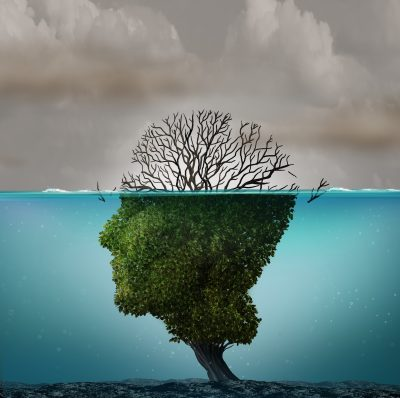

"Try to leave the earth a better place than you arrived"
Composting is a natural process of breaking down organic matter into nutrient-rich soil. Here are the basic steps for composting:
Choose a location: Select a dry, shady spot for your compost pile or bin. Make sure it is easily accessible, and away from areas where it could become a nuisance to neighbors.
Collect organic waste: Collect food scraps (fruits and vegetables, eggshells, coffee grounds), yard waste (grass clippings, leaves, small twigs), and other organic materials like shredded paper and cardboard.
Build the pile: Start with a layer of twigs or other bulky materials at the bottom, and then add alternating layers of green and brown materials, making sure to moisten each layer as you go. Green materials are high in nitrogen, such as fruit and vegetable scraps and grass clippings. Brown materials are high in carbon, such as dried leaves and straw.
Turn the pile: Use a garden fork or compost aerator to mix the materials in the pile. This helps to introduce oxygen and speed up the decomposition process.
Add water: Keep the pile moist, but not too wet. A good rule of thumb is that it should feel like a damp sponge.
Wait: Depending on the size of the pile and the conditions, it can take anywhere from a few weeks to several months for the compost to be ready. It should look dark and crumbly, with a pleasant earthy smell.
Use the compost: Spread the compost in your garden beds or use it as a top dressing for your lawn.
Remember to avoid adding meat, dairy, and oily foods to your compost pile, as these can attract pests and slow down the composting process. Also, avoid using weed seeds and diseased plants in your compost.